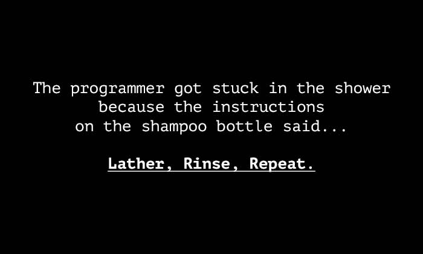
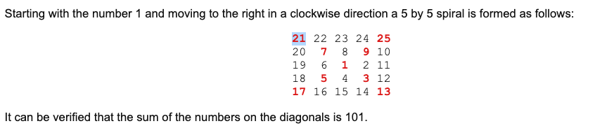

# INFO 450 Fall 2020 <div style="text-align:center;font-size: 1.5;line-height:1.8em;">Week 9</div> --- # Agenda * Exam Review * How to Solve Problems --- # Exam Review --- # How to Solve Problems https://hackernoon.com/how-to-approach-any-coding-problem-9230f3ad6f9 * Understand and Analyse the Problem * Go through the sample inputs and examples thoroughly * Break down the problem * Start solving/coding * Look Back and Learn More --- # Understand and Analyse the Problem Read the problem. Read it two more times. Do you understand what the problem is saying? What are the inputs to the problem? What are the outputs of the problem? Do you need more information? ---  --- # Sample Inputs and Examples Going through some sample inputs and coming up with more examples sure helps you a lot to understand the problem well, and moreover, it gives you a clear way to how many cases your code should handle, and what all can be the possible output or output range. Suggestion * Take very simple examples and find the output * Take more complex and bigger inputs to see what will be the output, how many use cases do we want Time to handle the edge cases * Try out the problem with no input, what should be the output now * Try out the problem with invalid input, what should be the output now --- # Break down the problem * Try to make a mental flow chart * Divide the problem into module/sub problems * Connect sub problems into a mental flow * Start thinking about classes (CHF: more to come) --- # Start solving/coding * Where do you start * Where are you now * What is your destination --- # Let's apply this to some real problems starting with our big exam question then hackerrank It's my favorite. --- # Homework Due next Wednesday night (Oct 21st, 2020 by 11:59:59 PM, eastern) In your github repository: github.com/[account]/[repository]/week9/spiral.py The canvas submission will be the url to your code.  ``` What is the sum of the numbers on the diagonals in a 501 by 501 spiral formed in the same way? ``` Your code should execute, and print out the answer. Nothing else should be 'printed' .. you can log (DEBUG please) other things, but don't print anything but the answer. ---